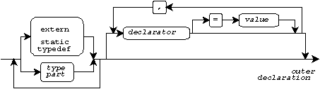
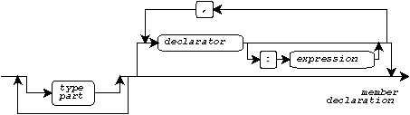
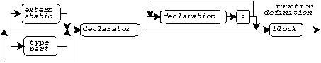
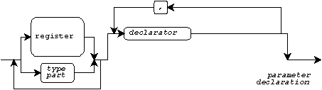
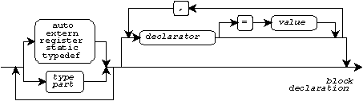
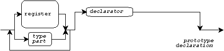
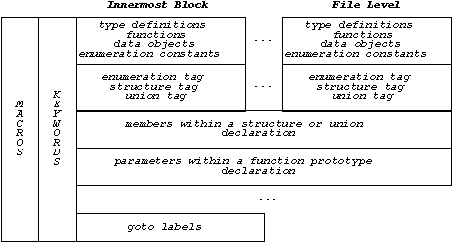

Declaration Contexts and Levels · Outer Declaration · Member Declaration · Function Definition · Parameter Declaration · Block Declaration · Prototype Declaration · Type-Name Declaration · Declaration Levels · Visibility and Name Spaces · Name Spaces · Scope · Linkage and Multiple Declarations · Linkage · Tags · Type Definition · Object Declaration · Function Declaration · Reading Declarations · Object Initializers
A translation unit consists of one or more declarations, each of which can:
Declarations can contain other declarations in turn.
This document describes how to use declarations to construct a C program. It describes how to create names and how to use the same name for distinct purposes. It also shows how to write object initializers to specify the initial values stored in objects. The behavior of functions is described separately.
You can write declarations in different contexts. The syntax of an arbitrary declaration (other than a function definition) is:
The presentation that follows shows graphically how each context restricts the declarations that you can write, by eliminating from this syntax diagram those parts that are not permitted in a given context. It also describes when you must write a name within the declarator part of a declaration and when you must not.
Here is a sampler of all possible declaration contexts:
struct stack { outer declaration
int top, a[100]; member declaration
} stk = {0};
void push(val) function definition
int val; parameter declaration
{
extern void oflo( block declaration
char *mesg); prototype declaration
if (stk.top < sizeof a /
sizeof (int)) type-name declaration
stk.a[stk.top++] = val;
else
oflo("stack overflow");
}
You write an outer declaration as one of the declarations that make up a translation unit. An outer declaration is one that is not contained within another declaration or function definition:

You can omit the declarator only for a structure, union, or enumeration declaration that declares a tag. You must write a name within the declarator of any other outer declarator.
You write a member declaration to declare members of a structure or union, as part of another declaration.

A bitfield can be unnamed. If the declarator is for a bitfield that has zero size, do not write a name within the declarator. If the declarator is for a bitfield that has nonzero size, then you can optionally write a name; otherwise, you must write a name.
You write a function definition as one of the declarations that make up a translation unit. You cannot write a function definition within another declaration or function definition.

This is the only context where you can omit both the storage class and any type part. You must write a name within the declarator.
You write a parameter declaration as part of a function definition whose function declarator contains a list of parameter names. You must write a parameter name within the declarator.

You write a block declaration as one of the declarations that begin a block within a function definition.

You can omit the declarator only for a structure, union, or enumeration declaration that declares a tag. Otherwise, you must write a name within the declarator.
You write a prototype declaration within a declarator as part of a function decoration to declare a function parameter.

If the prototype declaration declares a parameter for a function that you are defining (it is part of a function definition), then you must write a name within the declarator. Otherwise, you can omit the name.
You write a type-name declaration within an expression, eihher as a type cast operator or following the sizeof operator. Do not write a name within the declarator.

You use member declarations and type-name declarations only to specify type information. You declare the functions and objects that make up the program in the remaining five contexts shown above. These contexts reside at three declaration levels:
How the translator interprets a declaration that you write depends on the level at which you write it. In particular, the meaning of a storage class keyword that you write (or the absence of a storage class keyword) differs considerably among the declaration levels.
You use names when you declare or define different entities in a program (possibly by including a standard header). The entities that have names are:
The program can declare or define some of these entities by including standard headers. The program can implicitly declare a function by calling the function within an expression.
Each entity is visible over some region of the program text. You refer to a visible entity by writing its name. A macro, for example, is visible from the define directive that defines it to any undef directive that removes the definition or to the end of the translation unit. An object that you declare within a block is visible from where you declare it to the end of the block (except where it is masked, as described below).
You can sometimes mask an entity by giving another meaning to the same name. An object that you declare within an inner block, for example, can mask a declaration in a containing block (until the end of the inner block). You can use an existing name for a new entity only if its name occupies a different name space from the entity it masks. You can specify an open-ended set of name spaces.
The following diagram shows the relationship between various name spaces:

Each box in this diagram is a separate name space. You can use a name only one way within a given name space. The diagram shows, for example, that within a block you cannot use the same name both as a structure tag and as a union tag.
union x {int i; float f;};
struct x {... }; INVALID: same name space
Each box in this diagram masks any boxes to its right. If the translator can interpret a name as designating an entity within a given box, then the same name in any box to its right is not visible. If you define a macro without parameters, for example, then the translator will always take the name as the name of the macro. The macro definition masks any other meaning.
extern int neg(int x); #define neg(x) (-(x)) y = neg(i + j); macro masks function
You introduce two new name spaces with every block that you write. One name space includes all functions, objects, type definitions, and enumeration constants that you declare or define within the block. The other name space includes all enumeration, structure, and union tags that you define within the block. You can also introduce a new structure or union tag within a block before you define it by writing a declaration without a declarator, as in:
{ new block
struct x; new meaning for x
struct y {
struct x *px; px points to new x
A structure or union declaration with only a tag (and no definition or declarator) masks any tag name declared in a containing block.
The outermost block of a function definition includes in its name space all the parameters for the function, as object declarations. The name spaces for a block end with the end of the block.
You introduce a new goto label name space with every function definition you write. Each goto label name space ends with its function definition.
You introduce a new member name space with every structure or
union whose content you define. You identify a member name space by
the type of left operand that you write for a member selection operator,
as in x.y or p->y.
A member name space ends with the
end of the block in which you declare it.
The scope of a name that you declare or define is the region of the program over which the name retains its declared or defined meaning. A name is visible over its scope except where it is masked:
A macro name is in scope from the point where it is defined (by a define directive) to the point where its definition is removed (by an undef directive, if any). You cannot mask a macro name.
You can sometimes use the same name to refer to the same entity in multiple declarations. For functions and objects, you write declarations that specify various kinds of linkage for the name you declare. By using linkage, you can write multiple declarations:
In either of these two cases, you can have the declarations refer to the same function or object.
You can use the same enumeration, structure, or union tag in multiple declarations to refer to a common type. Similarly, you can use a type definition to define an arbitrary type in one declaration and use that type in other declarations.
A declaration specifies the linkage of a name. Linkage determines whether the same name declared in different declarations refers to the same function or object. There are three kinds of linkage:
The names of functions always have either external or internal linkage.
There are separate rules for determining linkage of objects and functions. In either case, however, do not declare the same name with both internal linkage and external linkage in the same translation unit.
Whenever two declarations designate the same function or object, the types specified in the two declarations must be compatible. If two such declarations are in the same name space, the resulting type for the second declaration is the composite type.
For example, a valid combination of declarations is:
extern int a[]; external linkage extern int a[10]; type is compatible
You use enumeration, structure, and union tags to designate the same integer, structure, or union type in multiple declarations. You provide a definition for the type (enclosed in braces) in no more than one of the declarations. You can use a structure or union tag (but not an enumeration tag) in a declaration before you define the type, to designate an incomplete structure or incomplete union type. When you later provide a definition for the incomplete structure or union type, it must be in the same name space.
For example:
struct node { begin definition of node
int type, value;
struct node *L, *R; valid: although node incomplete
} *root = NULL; node now complete
Here, a declaration that refers to the structure whose tag is
node appears before the structure type is complete. This is
the only way to declare a structure that refers to itself
in its definition.
You use type definitions to designate the same arbitrary type in multiple declarations. A type definition is not a new type; it is a synonym for the type you specify when you write the type definition.
For example:
typedef int I, AI[], *PI; extern int i, ai[10], *pi; extern I i; valid: compatible type extern AI ai; valid: compatible type extern PI pi; valid: compatible type
You can write any type in a type definition. You cannot, however, use a type definition in a function definition if the parameter list for the function being defined is specified by the type definition.
For example:
typedef void VOID; valid type definition
typedef VOID VF(int x); valid type definition
VF *pf; valid use of type definition
VF f { INVALID use of type definition
The parameter list for a function must appear explicitly as a function decoration in the declarator part of a function definition, as in:
VOID f(int x) { valid use of type definition
A type definition behaves exactly like its synonym when the translator compares types. (The type definition and its synonym are compatible.)
You declare the objects that the program manipulates at file level, at parameter level (within a function definition), or at block level. The storage class keyword you write (if any) determines several properties of an object declaration. The same storage class can have different meanings at the three declaration levels.
The properties you specify by writing a given storage class at a given declaration level are linkage, storage duration, form of initialization, and object definition status. An object declaration can specify that a name has:
Some declarations accept the previous linkage of a declaration that is visible at file level for the same name (with external or internal linkage). If such a declaration is not visible, then the previous linkage is taken to be external linkage.
An object declaration can specify that the declared object has one of two storage durations:
A type definition for an object type has no duration because duration has no meaning in this case.
An object declaration can permit one of two forms of initialization:
You must write no initializer in some cases.
Each of the four kinds of object definition status of a declaration determines whether the declaration causes storage for an object to be allocated:
The following table summarizes the effect of each storage class at each declaration level on object declarations:
Storage File-Level Parameter-Level Block-Level
Class Declaration Declaration Declaration
none external linkage no linkage no linkage
static duration dynamic duration dynamic duration
static initializer no initializer dynamic initializer
tentative definition definition definition
auto -- -- no linkage
dynamic duration
dynamic initializer
definition
extern previous linkage -- previous linkage
static duration static duration
static initializer no initializer
not a definition not a definition
register -- no linkage no linkage
dynamic duration dynamic duration
no initializer dynamic initializer
definition definition
static internal linkage -- no linkage
static duration static duration
static initializer static initializer
tentative definition definition
typedef no linkage -- no linkage
no duration no duration
no initializer no initializer
type definition type definition
The table specifies the definition status assuming that you do not write an initializer. In all cases, if you write an initializer (where permitted), then the declaration allocates storage for the object. (It is a definition.) For example, the following two declarations both name the same object:
static int abc; internal linkage, tentative definition extern int abc; previous linkage, no definition
You declare the functions that a program calls at file level or at block level. The translator alters any declaration you write at parameter level with type function returning T to type pointer to function returning T, which is an object type.
The properties you specify by writing a given storage class at a given declaration level are linkage and function definition status. A function declaration can specify that a name has:
Some declarations accept the previous linkage of a declaration that is visible at file level for the same name (with external or internal linkage). If such a declaration is not visible, then the previous linkage is taken to be external linkage
The function definition status of a declaration determines whether you can write a function definition in that context. You have one of three possibilities:
The following table summarizes the effect of each storage class, at each declaration level, on function declarations:
Storage File-Level Parameter-Level Block-Level
Class Declaration Declaration Declaration
none previous linkage (becomes pointer previous linkage
can define to function) cannot define
auto -- -- --
extern previous linkage -- previous linkage
can define cannot define
register -- (becomes pointer --
to function)
static internal linkage -- --
can define
typedef no linkage -- no linkage
type definition type definition
For example, the following declarations both name the same function:
static int f(void); internal linkage extern int f(void); previous linkage
Reading a declaration is not always easy. Proceed with caution any time:
The following provides some simple guidelines for writing and reading complex declarations.
When you write a declaration, avoid redundant parentheses. In
particular, never write parentheses around a name,
as in int (x), because it is easy
for you or others to misread the parenthesized
name as a parameter list, and the type changes if you omit the name.
You must omit the name when you write a
type cast operator.
You can omit the name in a declarator when you write
a function parameter declaration that is not part of a function definition.
If you omit the name in the example above,
you get int (),
which specifies type function returning int, not type int.
Avoid writing a declaration that masks a type definition. If you must mask a type definition, write at least one type part in the masking declaration that is not a type qualifier. The translator assumes that a name visible as a type definition is always a type part if that is a valid interpretation of the source text, even if another interpretation is also valid.
For example:
typedef char Small;
int g(short Small); valid: Small has new meaning
int f(Small) Small taken as type definition
short Small; INVALID: not a parameter name
To read a declaration, you must first replace the name if it has been omitted. You determine where to write the name by reading the declaration from left to right until you encounter:
You write the name immediately to the left of this point.
For example:
int becomes int x void (*)() becomes void (*x)() char [] becomes char x[] long () becomes long x()
You read a complex declaration by first locating the name (using the previous rules). Then you:
The following diagram can also help:
d7 d6 ( d4 d3 NAME d1 d2 ) d5
Read the decorations in increasing numeric order, beginning
with d1 and ending with the type parts
(d7). It is often
sufficient simply to remember that, in the absence of parentheses
(or within a pair of grouping parentheses), you read the pointer decorations
as the last part of the type.
For example:
int *fpi(void) is function returning pointer to int
int (*pfi)(void) is pointer to function returning int
unsigned int *(* const *name[5][10])(void)
is array with 5 elements of
array with 10 elements of
pointer to
pointer which is constant to
function (no parameters) returning
pointer to
unsigned int
You can specify an initial value for an object by writing an initializer. The type of the object and the declaration context constrain how you write an initializer.
You initialize an object with static duration by writing a static initializer. A static initializer for an object with scalar type consists of a single expression (possibly enclosed in braces) that the translator can evaluate prior to program startup. A static initializer for an object with array, structure, or union type consists of a list of one or more initializers separated by commas and enclosed in braces.
For example:
extern char *first = NULL;
static short February[4] = {29, 28, 28, 28};
You initialize an object with dynamic duration by writing a dynamic initializer. For other than array types, any rvalue expression that is assignment compatible with the type of the object can serve as a dynamic initializer. You can also write a dynamic initializer in the same form as a static initializer.
For example:
auto int bias =
{RAND_MAX/2}; static form initializer
auto int val =
rand() < bias; dynamic form initializer
The initializers that you write within a list separated by commas are inner initializers. You write an inner initializer the same way you write a static initializer, except that you can omit the outermost braces:
Some examples are:
struct complex {
float real, imag;
} neg_one = {-1, 0}; values for real and imag
union {
struct complex *p;
float value;
} val_ptr =
{&neg_one}; initializes pointer member
int a23[2][3] =
{{00, 01, 02}, all braces present
{10, 11, 12}}; on inner initializers
int a32[3][2] =
{00, 01, braces omitted
10, 11, on inner initializers
20, 21};
If you do not provide as many initializers as there are members or elements to initialize, the translator initializes any remaining members or elements to the value zero. Do not provide excess initializers. You can initialize an object of incomplete array type, in which case the number of element initializers you write determines the repetition count and completes the array type.
For example:
double matrix[10][10] =
{1.0}; rest set to 0
int ro[] = {1, 5, 10,
50, 100, 500}; 6 elements
You can initialize an array of any character type by writing
a string literal, or an array of wchar_t
by writing a wide character string literal,
as shorthand for a sequence of character constants.
The translator retains the terminating null character only when you
initialize an object of incomplete array type. (An object of complete
array type is padded as needed with trailing zero initializers.)
For example:
char fail[6] = "fail"; same as {'f', 'a', 'i', 'l', 0, 0}
char bad[] = "bad"; same as {'b', 'a', 'd', '\0'}
wchar_t hai[3] = L"hai"; same as {L'h', L'a', L'i'}
But note:
wchar_t hai[3] = {L'h', L'a', L'i',
'\0'}; INVALID
The following table summarizes the various constraints on initializer expressions or initializer lists, depending on context and the type of the object:
Dynamic Static Inner
Type Initializer Initializer Initializer
arithmetic { arithmetic { arithmetic { arithmetic
rvalue } constant constant
expression } expression }
arithmetic arithmetic arithmetic
rvalue constant constant
expression expression
pointer { assignment- { address { address
compatible constant constant
rvalue } expression } expression }
assignment- address address
compatible constant constant
rvalue expression expression
structure { inner { inner { inner
initializer list initializer list initializer list
for members } for members } for members }
compatible inner
structure initializer list
rvalue for members
union { inner { inner { inner
initializer list initializer list initializer list
for first for first for first
member } member } member }
compatible inner
union initializer list
rvalue for first
member
array { inner { inner { inner
initializer list initializer list initializer list
for elements } for elements } for elements }
inner
initializer list
for elements
array of { "..." } { "..." } { "..." }
character "..." "..." "..."
array of { L"..." } { L"..." } { L"..." }
wchar_t L"..." L"..." L".."
This table shows you, for example, that you can write an arbitrary arithmetic rvalue expression as the initializer for an object with arithmetic type and dynamic duration. You can write an arithmetic constant expression, with or without braces, anywhere you initialize an object with arithmetic type.
The table also shows you that you can initialize the elements of an object of array type, in any context, by writing a list of initializers in braces. You can omit the braces only for a string literal initializer or for a list you write as an inner initializer for some containing initializer.
See also the Table of Contents and the Index.
Copyright © 1989-1996 by P.J. Plauger and Jim Brodie. All rights reserved.